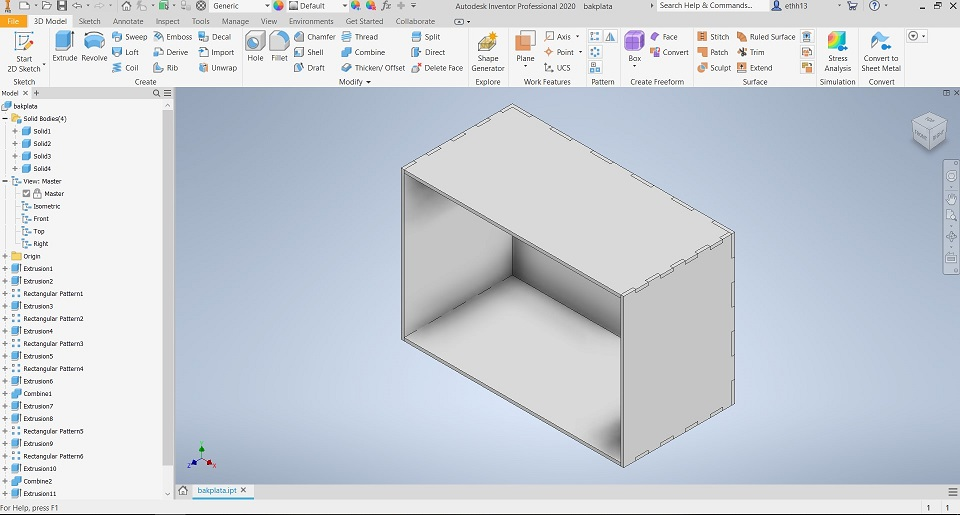
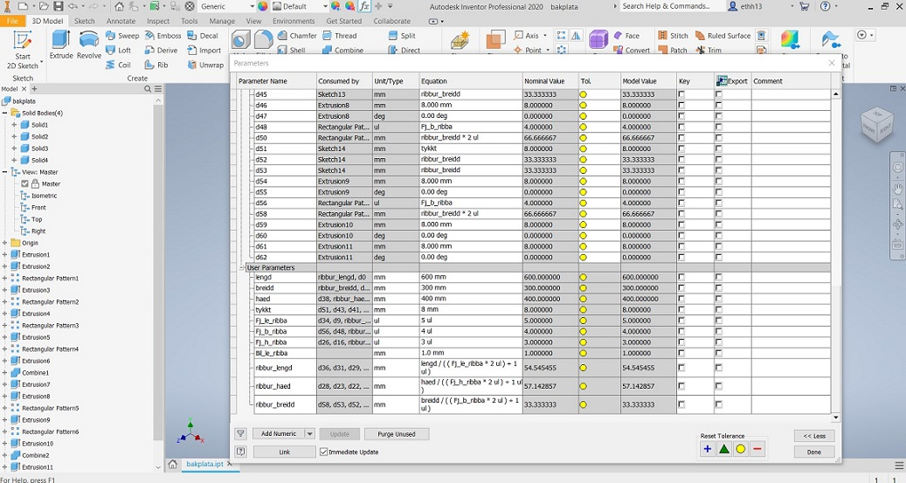
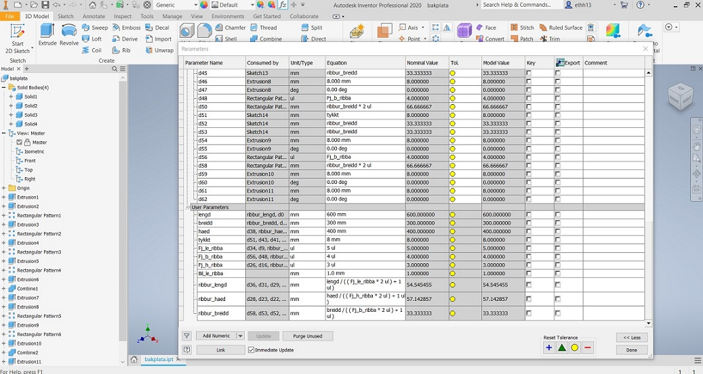

Næsta Mótorhjólið í safnið.
Lýsing á framkvæmd
Verkefni 2 felur í sér smíði á svokölluðu "press fittings" en það eru hlutir sem settir eru saman úr fleiri en einum íhlut og halda sér saman án þess að stuðst sé við lím eða skrúfur. Ekki er það allt, því hlutinn skal hann í teikniforiti, í mínu tilfelli Inventor og þar skal notast við svokallað parameters. Parameters er stef þessa verkefnis en í lok er svo skorið út úr timbri með lazer skurði.
Nánar um Parameters
Parameters er mjög magnað fyrirbæri sem leyfir þér að teikna upp hluti og skala þá svo upp seinna, án þess að rústa öllu sem skal hanga saman. Ég til dæmis byrjaði vitlaust, teiknaði eins og mér var vant að gera og fór að vinna hlutina eftir því. Í myndbandinu sem linkurinn er á hér að neðan fer hann einmitt yfir þetta atriði. Byrjaði ég því alveg uppá nýtt og vann þetta eins og myndbandið sýnir. Parameters gera manni kleift að minnka og stækka hlutina og göt og aðrir íhlutir fylgja með í réttum hlutföllum. Ég mæli sterklega með því að nota þetta kennslumyndband sem og að skýra hlutina þægilegum nöfnum sem auðvelt er að muna. í stað þess að skrifa mál eins og t.d. lengd á hlut 800mm þá er hreinlega skrifað orðið lengd sé búið að fara inn í parameters og skilgreina lengd og þar má svo stilla lengdina eftir þörfum.Vinnsla verkefnis
Unnið var við teikningu þessa verkefnis í Autodesk Inventor 2020 en stuðst við myndbönd er lúta að Fusion 360. Málið er að þetta er í grunnin mjög svipuð forrit og því hægt að nota leiðbeiningar úr öðruhvoru í hitt við og við.Eftir að hafa teiknað í Inventor komu í ljós ýmis vandamál t.d. þá er töluvert auðveldara að vinna þetta allt saman í Fusion því það forrit skilar teikningum út fyrir forritið í laser skeranum Inkscape án nokkura vandræða og t.d. í inventor teikningum þarf að teingja allar línurnar saman, en það má sjá á myndbandi hér að neðan hvernig það er gert. Ég mæli með að fara bara beint á 10. mínútu og þá sýnir hann hvernig þetta er gert í 4 skrefum, ekki línu fyrir línu. Til þess að koma teikningum úr Inventor og í Inkscape þá set ég myndband um það hvernig það er gert.
Þegar búið var loks að koma teikningum úr Inventor yfir í Inkscape þá tóku við ný vandamál sem þurfti að leysa. Fingurnir, ribbur kýs ég að kalla þá pössuðu ekki nógu vel saman, þó svo teiknað hafi verið þannig að mamma og pabbi væri stíf mál, þeas nákvæmlega sama stærð á mömmu og pabba. Það sem gerist hinsvegar við laser skurð er að laserinn tekur ca 0.02mm úr efninu og það veldur því að þetta verður rúmt, þeas ekki press fittings eins og þetta á að vera. Til þess að leysa það, má líka sjá myndband hér að neðan, en Arnar fór í gegnum það með mér og það felur í sér að í raun Offesta útlínur út um lítin part úr mm og göt afturá mót eru offestuð inn, til að þrengja. Því mæli með að gera það sem ég gerði í raun ekki, minnka stykkið í litla einingu og prófa hvernig þetta kemur út í stað þess að sólunda efni.
 

Linkar á þá staði sem ég sótti forrit og upplýsingar á
https://www.youtube.com/watch?v=9U2JPfkQpsE
https://www.youtube.com/watch?v=Q8Qt5hs7xpE